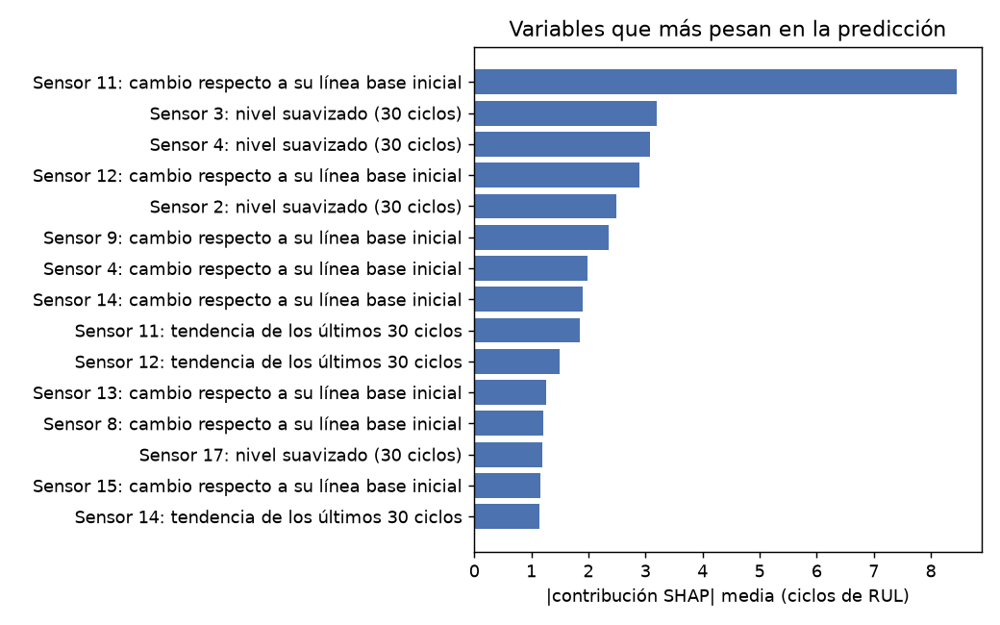
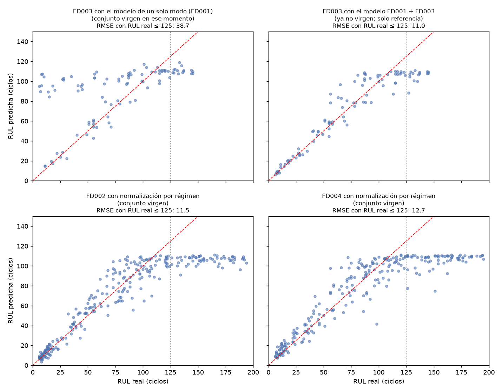

RUL estimada
– ciclos
Motores turbofán · NASA C-MAPSS FD001 y FD003
Cada ciclo (un vuelo) el motor entrega 21 lecturas. El modelo usa 14, las que cambian con el desgaste; las otras 7 son constantes o casi constantes en FD001 (el sensor 6 varía apenas) y no aportan información. Toca un número en el esquema: cada ficha explica qué mide, por qué importa y cómo lo analiza el modelo (qué variables saca de él y cuánto pesan).
El modelo no mira el valor crudo de cada sensor: cada motor sale de fábrica con valores algo distintos. Por cada uno de los 14 sensores calcula tres variables que solo usan los ciclos ya vividos, y se suman los 2 ajustes de operación: 14 × 3 + 2 = 44 variables.
Esta decisión, y no el cambio de algoritmo, explicó la mayor parte de la mejora respecto a la primera versión.
Validación cruzada por motor sobre los 200 motores de FD001 y FD003 (5 pliegues; ningún motor aparece a la vez en entrenamiento y validación), en la zona donde decide el mantenimiento: RUL real de hasta 125 ciclos. Menor es mejor. Con tantas filas se omitieron SVR y Random Forest, que antes quedaron a la par de XGBoost.
| Modelo | RMSE (ciclos) | MAE | Puntaje NASA |
|---|---|---|---|
| Ridge (línea base) | 16,72 ± 0,69 | 13,62 | 22 882 |
| XGBoost | 12,04 ± 0,61 | 8,91 | 11 510 |
| MLP | 11,52 ± 0,44 | 8,42 | 10 116 |
| Ensamble XGBoost + MLP (el que se usa) | 11,22 ± 0,43 | 8,14 | 9 572 |
El «±» es la desviación entre pliegues. Entre los modelos de árboles y redes las diferencias son pequeñas; lo que separa claramente es pasar del modelo lineal a uno no lineal.
Contribución media de cada variable (valores SHAP del componente XGBoost). Domina el cambio del sensor 11 (presión estática a la salida del compresor) respecto a su línea base, con unos 9,6 ciclos de contribución media, más del doble que la siguiente: el cambio del sensor 4 (T50), seguido del nivel suavizado de los sensores 17 y 3.

Mientras el motor está sano no hay desgaste que medir, así que el modelo se entrena con la RUL acotada a un tope. Se probó con varios valores (con los datos de FD001), siempre en validación cruzada y comparando con la misma RUL real (≤ 125).
| Tope | RMSE | Sesgo con 76–100 ciclos restantes | Diferencia vs 125 (IC 95 %) |
|---|---|---|---|
| 100 | 12,31 | −0,8 | −0,66 [−1,28; −0,07] |
| 110 (el que se usa) | 11,84 | +2,9 | −1,13 [−1,54; −0,71] |
| 125 | 12,96 | +7,2 | referencia |
| 140 | 14,05 | +9,6 | +1,10 [+0,86; +1,33] |
| 150 | 14,65 | +10,4 | +1,70 [+1,36; +2,02] |
Sesgo positivo = sobreestima la vida restante, que es lo peligroso. Por eso, con un motor saludable la página muestra «≥ 110» y no un número exacto. También se probaron una calibración isotónica y una cota por regresión cuantílica; no mejoraron y se descartaron.
Los datos de NASA vienen en cuatro conjuntos: FD001 y FD003 con una sola condición de vuelo (FD003 suma un segundo modo de falla), y FD002 y FD004 con seis condiciones. Con el modelo ya fijado se evaluó una sola vez en cada conjunto que todavía no se había mirado.

Un solo modo de falla no basta. El modelo entrenado solo con FD001 falló en FD003 (arriba a la izquierda): cerca de la falla sobreestimó la vida restante en unos 54 ciclos. No era culpa de los sensores, porque entrenar también con FD003 dejó el error en 11,1 sin empeorar FD001. Por eso el modelo de esta página se entrena con los dos modos (arriba a la derecha; esa prueba ya no es virgen, es solo referencia).
Varios regímenes de vuelo exigen normalizar. En FD002 y FD004 los sensores saltan según la condición de vuelo y ese salto tapa el desgaste: sin corregirlo casi no hay relación con la vida restante. Estandarizando cada sensor dentro de su régimen, un modelo aparte alcanzó, en conjuntos que nunca había visto, un RMSE de 11,5 (FD002) y 12,7 (FD004) con RUL real hasta 125. Ese modelo es de investigación y esta página todavía no lo usa.
Las nubes de puntos se aplanan cerca de 110: el modelo no distingue entre motores muy sanos, y por eso la página muestra «≥ 110».
Alcance del modelo. Se entrenó y validó con dos modos de falla (conjuntos FD001 y FD003 de NASA), ambos con un solo régimen de operación. Un modelo entrenado con un solo modo de falla sobreestimó la vida restante en unos 54 ciclos cuando se probó con el otro; por eso se entrena con los dos. Esta página supone un único régimen de operación; para motores que operan en varios regímenes de vuelo (FD002 y FD004) existe un modelo aparte, probado en investigación, que todavía no se usa aquí. No uses esta estimación para ellos.
Son los 100 motores de prueba de NASA. Se conoce su vida restante real, así que puedes comparar la predicción con la realidad.
Pega o sube el historial de un motor, un ciclo por fila: archivo de NASA (26 columnas, sin encabezado) o CSV con encabezado. El historial debe empezar en el primer ciclo del motor (la línea base se calcula con sus primeros 10 ciclos). Se necesitan al menos setting1, setting2 y los sensores 2, 3, 4, 7, 8, 9, 11, 12, 13, 14, 15, 17, 20 y 21.
Mueve el control para ver qué estimaría el modelo en cada momento de la vida del motor, usando solo los ciclos anteriores.
– ciclos
– ciclos
Resta el margen con que el modelo sobreestimó en el 90 % de los ciclos de validación.
–
–%
– ciclos
Variables que más empujan la estimación en el ciclo elegido.
Los datos son simulados (NASA C-MAPSS, dos modos de falla en el entrenamiento). Esta herramienta apoya la decisión de mantenimiento, no la reemplaza. Los umbrales del estado son de referencia.